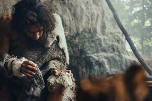

Передісторичний період — це тривалий етап в історії людства,
що охоплює час від появи перших представників роду Homo до виникнення писемності.
Він починається приблизно 2,5 мільйона років тому і закінчується близько 3-5 тисяч років тому з появою перших цивілізацій.
Основними джерелами знань про цей період є археологічні знахідки, такі як кам'яні знаряддя,
наскельні малюнки та залишки стародавніх поселень.
Протягом цього часу людство поступово переходило від полювання і збиральництва до землеробства та осілого способу життя,
що стало основою для подальшого розвитку соціальних структур і перших міст.
Передісторія поділяється на кілька етапів: палеоліт, мезоліт і неоліт.
Палеоліт характеризується використанням простих кам'яних знарядь, а неоліт — розвитком землеробства, скотарства і появою кераміки.

|
Основні етапи:
- Палеоліт: перші знаряддя праці.
- Неоліт: початок землеробства.
|
Факти:
- Знаряддя з каменю.
- Спілкування жестами.
- Використання вогню для приготування їжі.
- Полювання на великих тварин.
- Збиральництво дикорослих рослин.
- Використання шкір тварин для одягу.
- Створення малюнків на стінах печер.
- Використання костей тварин для виготовлення знарядь.
- Сформовані перші соціальні групи та племена.
- Використання природних матеріалів для будівництва укриттів.
- Розвиток звичаїв та ритуалів у спільнотах.
- Виготовлення прикрас із раковин та зубів тварин.
|
Цікаві факти:
- Ранні люди полювали та збирали їжу.
- Створювали наскельні малюнки.
- Перші музичні інструменти, як-от флейти з кісток, з'явилися понад 40 000 років тому.
- Люди одомашнили собак ще в епоху палеоліту, що робить їх першими прирученими тваринами.
- Вони також створювали примітивний одяг зі шкір тварин, щоб захищатися від холоду.
- Вогонь став ключовою технологією, яка дозволила готувати їжу і зігрівати житла.
- Передісторичні люди жили у печерах, проте згодом почали будувати перші примітивні хатини.
- Наскельні малюнки, як у печерах Ласко, Франція, свідчать про мистецькі здібності древніх людей.
- В кінці передісторії з'явилися перші сільськогосподарські громади, які почали вирощувати рослини та приручати худобу.

|
|
|